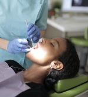
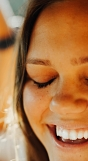
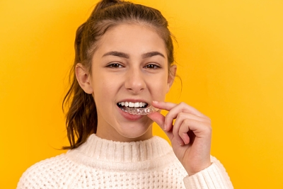
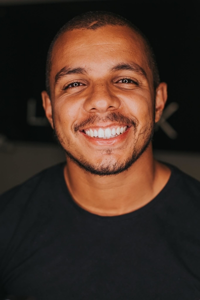
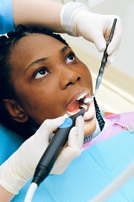

NUESTROS SERVICIOS
IMPLANTES DENTALES >>
Este tratamiento reemplaza las piezas dentarias faltantes con pernos de titanio anclados al hueso. Estos posteriormente son rehabilitados mediante coronas, ofreciendote así una apariencia natural y armónica.
El implante dental funciona a manera de raíz, por lo que es una solución definitiva y eficaz para la pérdida de piezas dentales.

PRÓTESIS >>
La prótesis es una solución natural para restaurar problemas bucales asociados a las pérdidas dentales. Nuestros servicios garnatizan una estabilidad adecuada y correcta fijación. De acuerdo al caso particular pueden ser de tipo removibles, fija, o sobre implantes.

CORONAS >>
Se trata de un tratamiento cuyo objetivo es cubrir y proteger la pieza dentaria, aunque ésta se encuentre parcialmente dañada o estéticamente afectada. Funciona como un recurso antes de la extracción, permitiéndote así conservar la pieza dentaria. Utilizamos materiales de calidad que prolongan la vida del tratamiento, y que a su vez proporcionan una estética adecuada para tu sonrisa.

RESINAS >>
El tratamiento con resinas es utilizado para la restauración de piezas dentales. Son muy recomendadas y utilizadas ya que, a diferencia de las amalgamas, son del mismo color del diente y por ende otorgan una solución estética ideal. Para garantizarlo seleccionamos los tonos de resina que mejor se adapten al color natural de tu dentadura, de modo que en el resultado final no se distinga la pieza tratada del resto.

BRUXISMO >>
El bruxismo es una patología muy frecuente que se da tanto en adultos como en niños. Está dado por apretar la dentadura de una forma consciente o inconsciente durante el día o la noche, ocasionando el desajuste y degaste de tus dientes y hasta dolores de cabeza. La buena noticia es que existen diversos tratamientos para el bruxismo, los cuales dependerán del grado de problema y de la situación a remediar. Te recomendamos que pidas tu cita para poder evaluar tu caso, teniendo en cuenta que es una afección que debe resolverse cuanto antes para evitar problemas mayores y a la vez, mejorar tu calidad de vida.

EXTRACCIONES >>
Consiste en extraer piezas dentales en mal estado que generalmente causan dolor y deben ser removidas para evitar problemas posteriores. El malestar puede deberse a la presencia de caries, dientes infectados, dientes temporales o retenidos entre otros.
NUESTRAS INSTALACIONES
Contamos con equipos certificados por organismos internacionales tales como la US FDA, la Japanese JIS y la EU CE, garantizando así el cumplimiento con los estándares de calidad más altos establecidos.
ACERCA DE LA DRA. SILVANA KAPRIELIAN
Dra. Silvana Kaprielian
Doctora en Odontología
Universidad de la República - 2013
Especialista en Cirugía para Implantes y Prótesis Implanto-Asistidas
Universidad Católica del Uruguay - 2017
Actualización Carga Inmediata con Implantes Grant-Morse
Facultad de Ilapeo Curitiba, Brasil - 2019
Curso Nuevas Paradigmas en Implantología y Rehabilitación Estética
Pro3implant, Zimmer Biomet - 2015
Curso de Actualización sobre Fundamentos y Procedimientos Quirúrgicos en Implantoprostodoncia
UDELAR, Escuela de Graduados - 2013
Curso de Actualización sobre Rehabilitación Oclusal en Implantoprostodoncia
UDELAR, Escuela de Graduados - 2013
Curso de Carillas de Porcelana, desde la Planificación al Cementado
Bicon - 2019
Participación en la Cátedra de Implantes
Universidad Católica del Uruguay - 2019 a la actualidad
Integración en la Cooperativa Red Dentist
Red Dentist - 2019 a la actualidad
¿QUÉ OPINAN NUESTROS PACIENTES?